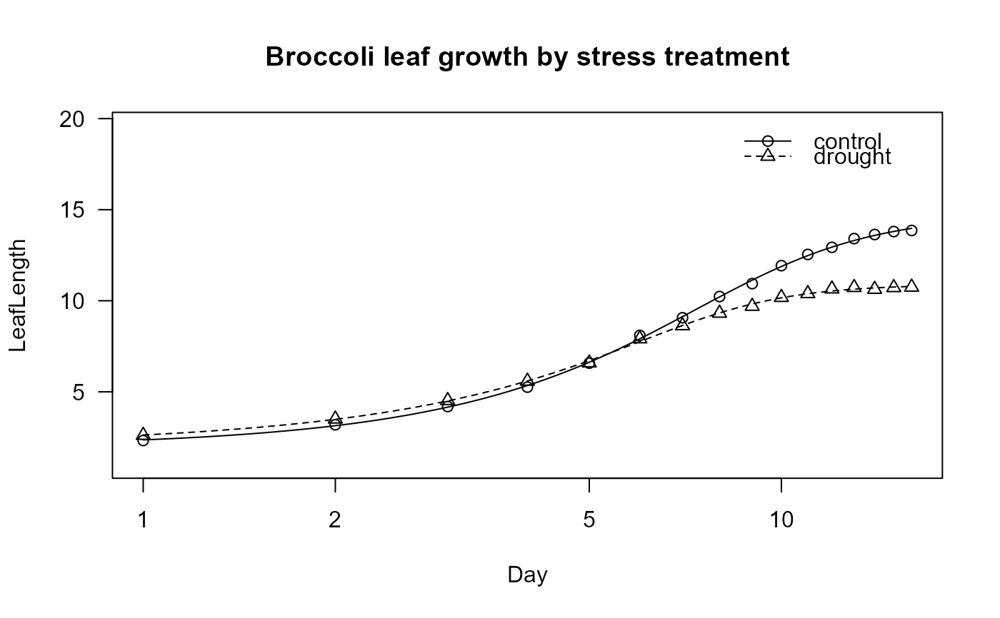

The Effects of Drought Stress on Leaf Development in a Brassica oleracea population
broccoli.RdThe effect of drought stress on Brassica oleracea should be investigated, selecting drought stress resistant out of a population of different DH genotypes. The study was carried out on 48 DH lines developed from F1 plants of a cross between the rapid cycling chinese kale (Brassica oleracea var. alboglabra (L.H. Bailey) Musil) and broccoli (Brassica oleracea var. italica Plenck). 2 stress treatments (not watered and a watered control) are randomly assigned to 4 plants per genotype (2 per treatment) resulting in 192 plants in total. For the genotypes 5, 17, 31, 48, additional 12 plants (6 per treatment) are included into the completely randomized design, which results in a total of 240 plants. For each plant the length of the youngest leaf at the beginning of the experiment is measured daily for a period of 16 days. For the additional 12 plants of the 4 genotypes the leaf water potential was measured as a secondary endpoint (omitted here); due to these destructive measurements some dropouts occur.
Usage
data(broccoli)Format
A data frame with 3689 observations on the following 5 variables.
LeafLengthLength of the youngest leaf [cm]
IDPlant identifier for 240 plants
StressDrought stress treatment with 2 levels (control/drought)
GenotypeGenotype ID with 48 levels
DayDay of repeated measurement (1,2,...,16)
References
Uptmoor, R.; Osei-Kwarteng, M.; Guertler, S. & Stuetzel, H. Modeling the Effects of Drought Stress on Leaf Development in a Brassica oleracea Doubled Haploid Population Using Two-phase Linear Functions. Journal of the American Society for Horticultural Science, 2009, 134, 543-552.
Examples
data(broccoli)
## Display the structure of the data
head(broccoli)
#> LeafLength ID Stress Genotype Day
#> 1 1.4 38 control 17 1
#> 2 1.2 62 control 17 1
#> 3 2.5 35 control 17 1
#> 4 1.8 91 control 17 1
#> 5 1.7 76 control 17 1
#> 6 1.4 108 control 17 1
## Fit a five-parameter log-logistic model per stress treatment
broccoli.m1 <- drm(LeafLength ~ Day, curveid = Stress,
data = broccoli, fct = LL.5())
summary(broccoli.m1)
#>
#> Model fitted: Generalized log-logistic (ED50 as parameter) (5 parms)
#>
#> Parameter estimates:
#>
#> Estimate Std. Error t-value p-value
#> b:control -3.52214 0.70944 -4.9647 7.195e-07 ***
#> b:drought -4.55117 0.93359 -4.8749 1.134e-06 ***
#> c:control 1.95443 0.28161 6.9402 4.608e-12 ***
#> c:drought 2.05815 0.35835 5.7435 1.003e-08 ***
#> d:control 14.72586 0.40596 36.2743 < 2.2e-16 ***
#> d:drought 10.88808 0.14244 76.4397 < 2.2e-16 ***
#> e:control 9.30461 0.87822 10.5949 < 2.2e-16 ***
#> e:drought 7.91145 0.68137 11.6112 < 2.2e-16 ***
#> f:control 0.43850 0.15151 2.8942 0.003824 **
#> f:drought 0.29038 0.10546 2.7534 0.005926 **
#> ---
#> Signif. codes: 0 '***' 0.001 '**' 0.01 '*' 0.05 '.' 0.1 ' ' 1
#>
#> Residual standard error:
#>
#> 1.693158 (3679 degrees of freedom)
plot(broccoli.m1, main = "Broccoli leaf growth by stress treatment")
